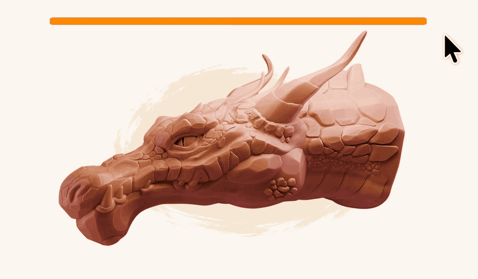

Designer: top navigation bar removed for now — the page leads with the centred logo and goes straight into the trailer. If a nav returns later it should stay minimal and not compete with the hero.
1 · Hero

Designer: this GIF is background-matched — it should feel drawn onto the cream page, not embedded in a player. No dark well, no play button, no chrome. It's the two-second "oh, I get it" before the trailer, so it autoplays and loops silently. Native size is 960×562, centred at its own ratio rather than stretched. The scrub bar is baked into the GIF, so nothing sits on top of it.
↺
Per-Object History
Independent history for each object. Switch objects, keep your history.
⇄
Scrubbable Timeline
Slide through your sculpt history and preview any step instantly.
🎬
Movie Mode
Export what you've made — your sculpt's history as a video.
🛡
Stable & Reliable
Built for real production. Tested well past 15 million polygons.
LAUNCH TRAILER — VIDEO the full product film · 16:9
Ctrl+Z ❌ Scrub your history ✅
[One line. Ten words maximum.]
✦ Don't take our word for it ✦
Try it right here.
[Drag the slider and scrub a real sculpt — no install needed.]
INTERACTIVE SCRUBBER — PLACEHOLDER
a real draggable slider running over a sequence of WebP frames
the visitor drags and watches the sculpt build up / rewind
on-screen prompt: "Drag the slider →"
EverythingHornJawFaceEyesNeck
↑ each button swaps in a different WebP set
Designer: the centrepiece and the one genuinely interactive element on the page. A visitor drags and watches a character build up or rewind — the actual feel of scrubbing before buying. Needs an obvious grab handle, a "drag me" cue on first load, touch support, and a sensible loading strategy for several WebP sets. No buy buttons in the hero — the marketplace supplies its own purchase sidebar.
PHOTO
"[Short quote — one sentence, max two lines. The 'someone I respect already uses this' cue.]"
[Name] · [studio / credit]
✦
Designer:interstitial testimonial pattern — a thin single-quote band recurring three times down the page (here, mid-page, before pricing). Not a section: a breath between sections. Keep all three visually identical and lighter than surrounding blocks. One quote each, never a carousel.
2 · Lane gallery
✦ Not just brush strokes. ✦
Vertex paint & Edit Mode changes
[one short line covering both]
GIF — vertex paint
Vertex paint
GIF — edit mode changes
Edit Mode changes
Face sets, masks & visibility
[one short line covering all three]
GIF — face sets
Face sets
GIF — masks
Masks
GIF — visibility
Visibility
🖌
All sculpt brushes
Including cloth brushes. [one short line]
GIF — sculpt + cloth brushes scrubbing
Designer: three blocks. The first two are condensed groups — a heading on top with small GIFs beneath (two, then three). They share one treatment so they read as a matched pair of "and it covers these too" statements rather than separate pitches. The 2-up grid is width-capped so its GIFs land at the same size as the 3-up. Copy stays to one short line per block.
Open question from us: "All sculpt brushes" may be cut entirely — it's the least surprising claim, since people assume brush strokes are covered. It sits last so removing it costs nothing structurally. Don't build a layout that breaks if this block disappears. ("Including cloth brushes" is the non-obvious part; if the block goes, that detail should move to the facts strip or FAQ.)
3 · Across objects
🗂
Every object keeps its own undo history.
GIF — several objects in one scene, each scrubbed independently
Designer: its own full-width beat — a distinct idea from the lane gallery, not a tile inside it. The GIF must make it obvious that each object carries a separate timeline: scrub one, the others stay put.
4 · Performance assurance
✦ It won't slow you down ✦
Tested on meshes with millions of polygons.
Works at 15 million polygons and above. [one supporting line — final copy TBD]
GIF — scrubbing a 15M+ polygon sculpt in real time Blender's statistics overlay visible, poly count readable no stutter, no lag
Designer: placed high on purpose. By now the visitor has seen how much gets recorded and is silently asking "surely this destroys my framerate?" — answer it while the doubt is forming. No data table; the claim plus one GIF is the whole section, polygon figure as a headline number.
On this GIF: it's evidence, not decoration — the poly counter must stay legible. Don't crop it out, shrink it below readable size, or overlay anything on that corner.
5 · Movie mode
🎬
Movie mode
[Export what you've made — your sculpt's history as a video.]
GIF / VIDEO — movie mode output: the sculpt playing back as a film
Designer: sells itself as motion — show the exported result, not the export dialog. Worth giving room; it's the feature people will share, which makes it marketing that markets itself.
PHOTO
"[Short quote — ideally one that mentions movie mode or a specific lane, so it reinforces what was just shown.]"
[Name] · [studio / credit]
✦
6 · Saves with your file
💾
Close it. Reopen it. Still there.
GIF — save · quit Blender · reopen the .blend · scrub the same history
Designer: one full-width GIF, one short headline. Major differentiator — don't shrink it into a grid tile.
7 · Comparison
☆
The ZBrush feature you've been missing
ZBRUSH UI — its history slider (screengrab)
[Linear history]
[No per-object history]
[No masks / vertex paint / edit mode]
[Can't export to video]
OUR UI — the same idea in Blender
[Interactive scrubber]
[Per-object histories]
[Brushes, masks, vertex paint & edit mode]
[Export your sculpt as a video]
Designer: standard software-comparison block, same as any SaaS site. The two panels must be visually aligned — same crop, scale and slider position — so the eye reads them as equivalents. Does the positioning work in one glance for the large ex-ZBrush audience.
8 · Made with it
📷
Sculpted with Sculpt Undo History
SCULPT 1
[title]
by [artist]
SCULPT 2
[title]
by [artist]
SCULPT 3
[title]
by [artist]
Designer: real commissioned sculpts. Artwork is the hero; names small. Still the visual half — no testimonial paragraphs.
9 · Facts strip
Blender [versions]
Saves in your .blend
Per-object history
15M+ polygons
▼ EVERYTHING BELOW IS THE DETAIL HALF — for readers already interested. Text-heavy is fine here. Nothing below this line should move above it.
10 · What it doesn't do
Let's be clear
It is
[a history layer for your sculpting work]
[a browsable, jump-anywhere timeline]
[saved with your file]
It isn't
[a replacement for Ctrl+Z]
[version control or a scene backup]
[unlimited — there is a step cap]
Designer: plain and unglamorous on purpose. Straight talk, not a feature panel.
11 · Without / With
Without
[Blind undo, one step at a time]
[A hard limit on how far back you can go]
[No way to compare two versions]
[History gone when you close Blender]
With Sculpt Undo History
[A visual timeline you can scrub]
[Your whole session on a slider]
[Jump to any earlier state instantly]
[History saved inside the .blend]
Designer: sits down here with the other reading material, directly before the FAQ — a summary for someone weighing the decision, not a headline. Quiet reference table, not a hero moment.
12 · FAQ
Questions
[Does it slow down sculpting?]
[Answer]
[Which Blender versions?]
[Answer]
[What exactly gets recorded?]
[Answer]
[How much memory does it use?]
[Answer]
[What happens when I share the file?]
[Answer]
[Refunds / support?]
[Answer]
PHOTO
"[Short quote — the last-doubt closer. Trust: reliability, performance, or 'I use it every day'.]"
[Name] · [studio / credit]
✦
Designer: third and final strip, immediately before pricing — the last nudge before a buying decision.
13 · Pricing
✦ Pricing
[Tier 1 — Free]
$XX
[feature]
[feature]
[Tier 2]
$XX
[feature]
[feature]
[Tier 3]
$XX
[feature]
[feature]
[Tier 4 — Studio]
$XX
[seats]
[commercial]
Designer: pricing sits near the end, after all the proof — so the Pricing link in the nav must anchor straight here. Tier count, names and prices all still open; build flexible enough to drop to three tiers or two. The highlighted tier is a placeholder for whichever becomes the recommended default.
Designer: footer carries changelog and contact — visible maintenance is a buying signal in this market.
Handoff notes
What this file is
A branded skeleton — the wireframe structure with a first pass at the visual direction: Fuzzy Bubbles headers, warm cream ground, orange accent, rounded cards, dark media wells for Blender captures. Treat colours and spacing as a starting point, not a spec.
Assets still needed
Logo / wordmark — the brush-and-swoosh mark; works small, light and dark.
Marketplace thumbnail — legible at ~250px on a phone; slider UI over a recognizable sculpt.
Interactive scrubber — frame/chrome, drag handle, region buttons, "drag me" cue. We supply WebP frames.
Doodle set — sparkles, underline swooshes, arrows with handwritten labels, in the style of the mockups.
GIF frame treatment — a consistent frame/shadow/corner style for the 12+ media wells.
Social card (Open Graph) for Reddit / X / Discord previews.
Mobile layouts for all 14 blocks.
We provide: trailer, all GIFs, WebP frame sets, screenshots, final pricing and copy. You provide: layout, identity, visual system.